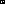
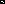
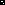
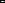

Moost Life

Moost Life is Life, but using the Moore neighborhood's Moore neighborhood, hence the terrible pun. Cells need five neighbors in their Moost neighborhood to be born, and two or three to survive. Through twelve trial runs, I have identified sixty unique still-lives. The most common of these are "Hollow Gun" (12.4%) and "Candleholder" (11.2%).
The MID is a unique identifier of all patterns. The first number is the smaller dimension, then the larger dimension, and the last number is the discriminant, the largest binary representation of that pattern, including rotations and reflections, converted to decimal. Each pattern has only one MID, and each MID identifies only one pattern. Since all you need anyway is the MID, I'll use that until I can work out how to make svgs that look like the pattern.
| Name | MID | Cells | Image | Count (of 258) |
Notes |
| Hollow Gun | 2.3.44 | 3 |  | 32 | Most common pattern. |
| Candleholder | 2.3.49 | 3 |  | 29 | Nearly most common pattern. |
| Arrowhead | 2.2.14 | 3 | 23 | One of only two stable 2x2 patterns. | |
| Drop | 3.3.385 | 3 |  | 17 | Most common 3x3 pattern. |
| Stick | 1.3.7 | 3 |  | 14 | Only common pattern of density 1. |
My previous hypothesis about oscillators being impossible has been proven incorrect; I have discovered a few oscillators while rewriting my moost simulator. All are period-2 oscillators:
| Name | MID | Cells | Image | Count (of 7) |
Period |
| Oscillator 1 "Stick Bouncer" |
3.4.3156 | 5 |
██ █ █ █ |
1 | 2 |
| Oscillator 2 "Candleholder Bouncer" |
3.4.3139 | 5 |
██ █ ██ |
4 | 2 |
| Oscillator 3 "Detatched Glider" |
4.4.33572 | 5 |
█ ██ █ █ |
1 | 2 |
| Oscillator 4 "Breaking Cane" |
4.5.532642 | 5 |
█ █ █ █ █ |
1 | 2 |